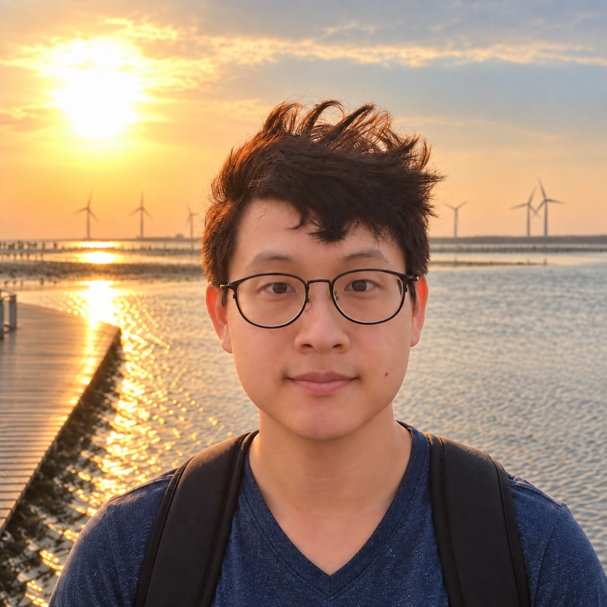
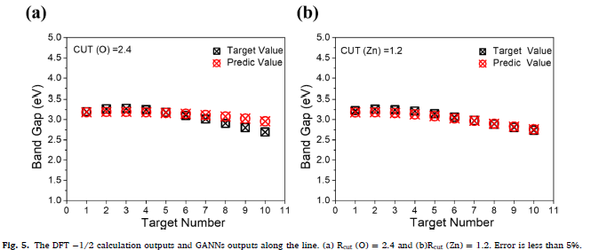
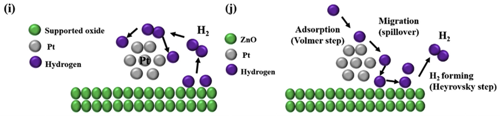
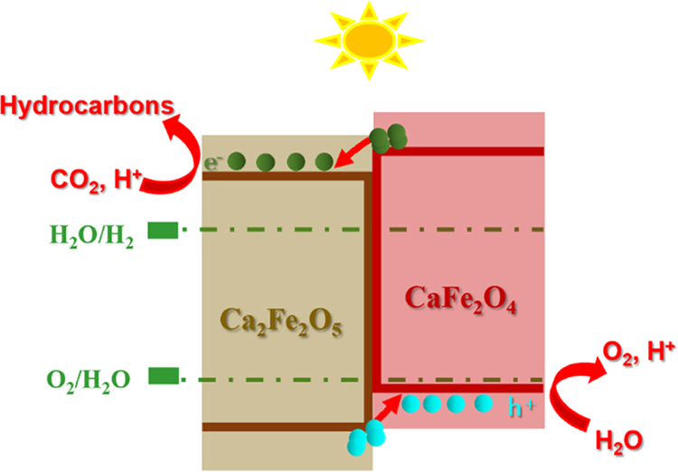
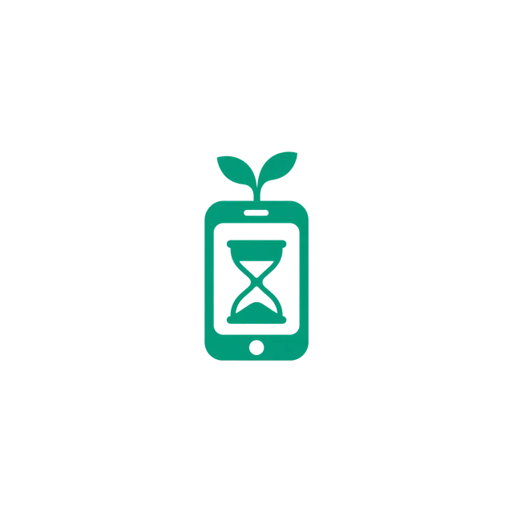
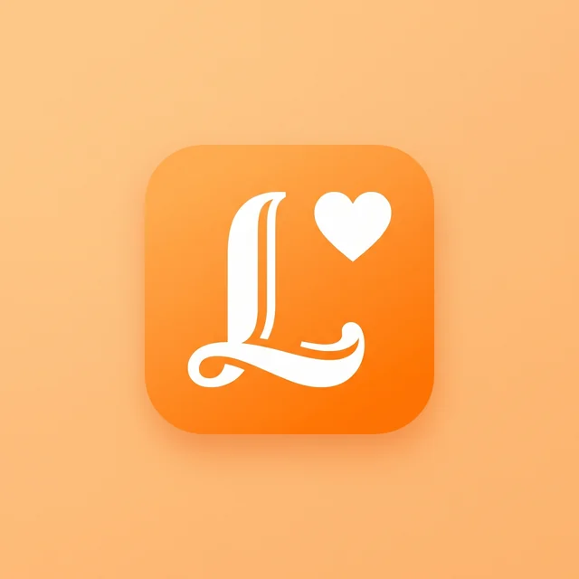
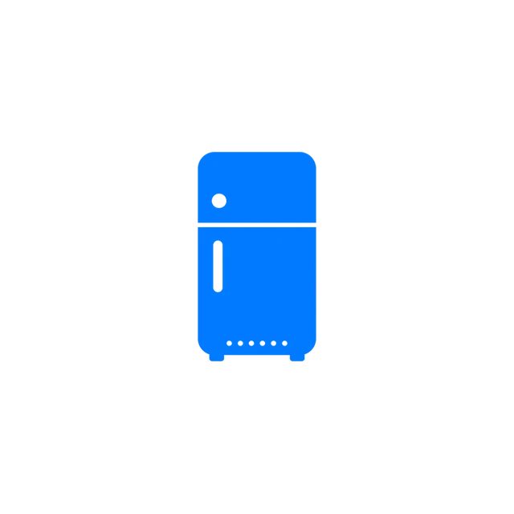

Hello, I'm Brian.
曾為哲 Wei-Che Tseng
半導體物理
×
AI 系統
以第一原理思考，用智慧自動化實踐
Physicist turned AI engineer — building systems that think and compute.
By the numbers
0
篇 SCI 論文
0
最高期刊影響因子
0
個完整專案
0
年封裝製程經驗
Experience
學經歷
2016 – 2020
材料科學與工程 學士
國立成功大學
2020 – 2022
材料科學與工程 碩士
國立成功大學 · 3 篇期刊論文
2023 – 2025
Bumping 製程工程師
台星科股份有限公司
Research
3 篇 SCI 國際期刊論文

利用機器學習建立模擬參數預測模型
Thin Solid Films, 2022
IF 2.1

以計算模擬篩選高效率產氫觸媒
Int. J. Hydrogen Energy, 2022
IF 7.2

CO₂ 光催化異質結構
ACS Sustainable Chem. & Eng., 2022
IF 8.4
Projects
6 個完整專案

3C Detox App
Flutter · Android

Elder Life App
Hive + AES · AI 問答
日文文法學習站 MyJapan
JLPT N4–N2 · TTS
互動式理工教材網站
83 章 · 1,209 道練習

冰箱庫存管理系統
Next.js + FastAPI
人生角色儀表板
React + Electron
曾為哲
Wei-Che Tseng · Brian
好的工程師不只是解決問題，而是建立一套能持續演進的系統。
brian861114@gmail.com
LinkedIn · Wei-Che Tseng